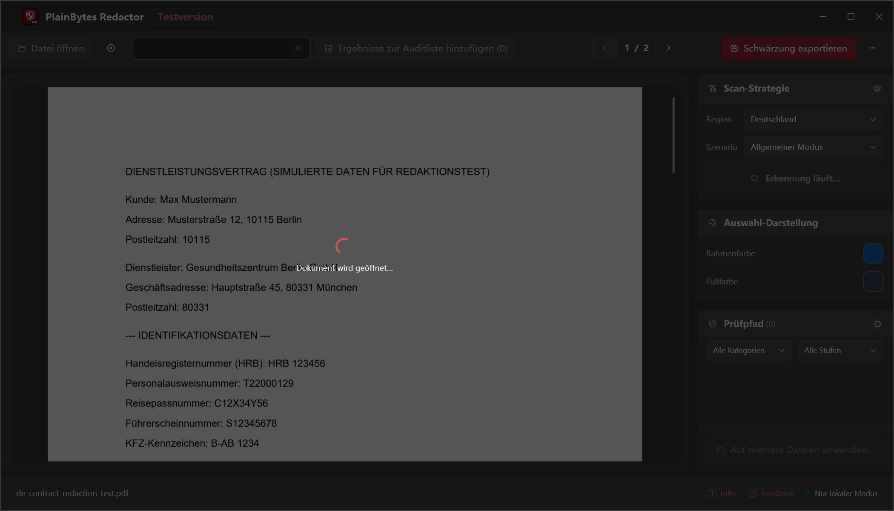
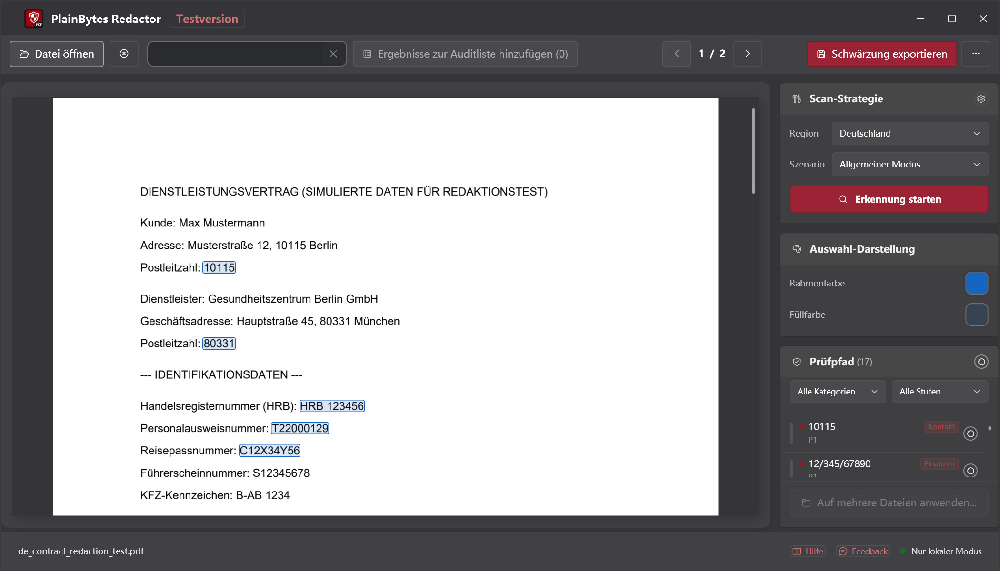
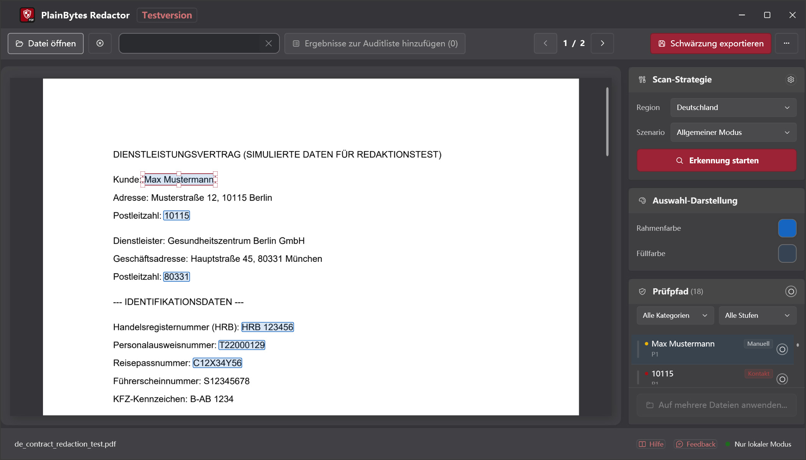
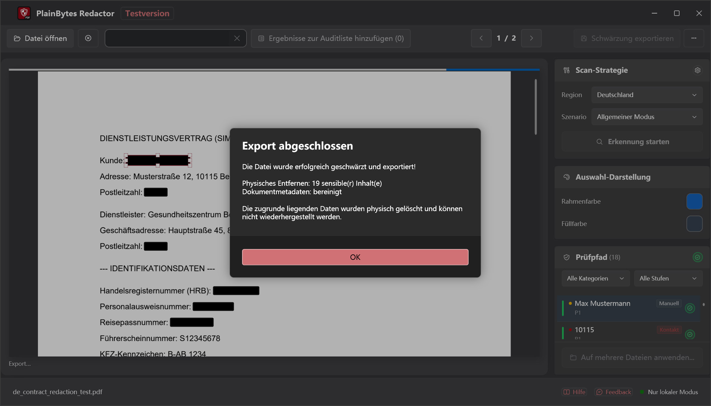

01
Öffnen & scannen
PDF laden und Erkennung für die Formate Ihrer Region ausführen.
PlainBytes Redactor
PlainBytes Redactor läuft vollständig auf Ihrem Computer — kein Cloud-Upload, kein KI-Dienst sieht Ihre Dateien. Automatische Erkennung für Kennungen aus 28 Ländern, plus manuelle Prüfung vor dem Export.
10 Tage kostenlos testen · Einmaliger Kauf · Kein Abo
So funktioniert es

PDF laden und Erkennung für die Formate Ihrer Region ausführen.

Jeden markierten Eintrag mit Risikokategorie anzeigen.

Vor dem Abschluss hinzufügen, entfernen oder feinjustieren.

Inhalt und Metadaten dauerhaft entfernt.
Die meisten Redaktionstools — besonders KI-gestützte — laden Dokumente auf einen Server hoch, bevor sie sensible Informationen finden und entfernen können. Wer Vertraulichkeit, Privilegien oder Prüfungsunabhängigkeit wahren muss, sollte dieses Risiko nicht nur für eine Datei eingehen müssen.
PlainBytes Redactor führt Erkennung und Verarbeitung auf Ihrem Gerät durch. Ihre Dateien verlassen Ihren Computer nicht — kein Konto, keine Synchronisation, kein Server.
Compliance
Local-First-Architektur im Einklang mit wichtigen Datenschutzrahmenwerken — keine Datenübermittlung an Dritte während der Verarbeitung.
Unterstützt die Erfüllung von Artikel 17 (Recht auf Löschung). Personenbezogene Daten werden dauerhaft aus dem PDF-Inhaltsstrom entfernt — keine Übertragung an Dritte während der Verarbeitung.
Recht auf LöschungDie vollständig lokale Verarbeitung unterstützt technische und organisatorische Maßnahmen (TOMs) gemäß BDSG. Dokumente verlassen das Gerät nicht — kein Cloud-Zugriff, kein externer Datentransfer.
Technische SchutzmaßnahmenDatenschutz ist von Anfang an in das Produkt integriert. Lokale Verarbeitung, physische Datenlöschung und keine Cloud-Abhängigkeit entsprechen dem Prinzip „Datenschutz durch Technikgestaltung" gemäß Artikel 25 DSGVO.
Datenschutz durch TechnikgestaltungHinweis: PlainBytes Redactor unterstützt datenschutzkonforme Arbeitsabläufe, ersetzt jedoch keine Rechtsberatung. Eine formelle Zertifizierung durch Dritte liegt nicht vor.
Für Anwälte
SSN, Finanzdaten und andere PII vor E-Filing oder Discovery-Austausch redigieren, ohne Mandantenakten über Cloud-Dienste zu leiten.
Für Steuerberater
Kontonummern, SSN und Mandanten-Finanzdaten redigieren, bevor Prüfungsunterlagen, Steuererklärungen oder Jahresabschlussberichte geteilt werden — ohne Mandantendaten über Cloud-Dienste Dritter zu leiten.
Für HR-Teams
Gehälter, SSN und persönliche Angaben redigieren, bevor Angebotsschreiben, Kündigungsunterlagen oder Personalakten mit Wirtschaftsprüfern, Rechtsberatern geteilt oder für Datenauskünfte verwendet werden.